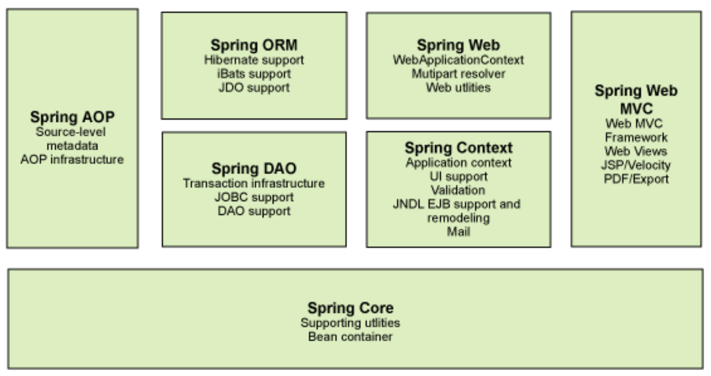

Spring概述 历史 Spring框架以interface21为基础，经过重新设计，2004年发布1.0正式版。其目的是使现有的企业开发变得容易。
创始人Rod Johnson。
SSH：Struct2+Srping+Hibernate
SSM：SpringMVC+Spring+Mybatis
组成 
特性
非入侵式框架：(应用程序的组件无需实现Spring的特定接口，或者说，组件根本不知道自己在Spring的容器中运行。)
IOC（控制反转）：
AOP（面向切面）：
支持事务处理：
对框架整合支持：
IoC容器 Spring的核心就是提供了一个IoC容器，它可以管理所有轻量级的JavaBean组件 ，提供的底层服务包括组件的生命周期管理、配置和组装服务、AOP支持，以及建立在AOP基础上的声明式事务服务等。
在我们实例化一个对象时，同时需要对它依赖的对象进行实例化（new）。多个组件之间依赖的对象很多时候可以共享。IOC就是一个用来创建组建，根据依赖关系组装组件，并将组件按依赖顺序正确销毁的解决方案。
inversion of control ，就是将实例化对象的操作从程序员手中转移给IOC容器托管。在IoC模式下，对象并不会自己创建依赖的组件，而是通过“注入”的方式进行装配。因此，Ioc又被称为依赖注入（DI：Dependency injection）。
在Spring 的IoC容器中，我们把所有组件统称为JavaBean，即配置一个组件就是配置一个Bean。
参数配置 1 2 3 4 5 6 7 8 9 10 11 <bean id ="userServer" class ="com.xx.UserServer.UserAServer" > <property name ="userDao" ref ="userDao" /> </bean > <bean id ="userDao" class ="com.xx.UserDao.UserADao" /> <alias name ="userServer" alias ="aaa" >
Import
将多个配置文件合并
1 2 3 4 5 <beans > <import resource ="bean1.xml" /> </beans >
依赖注入的方式 （1）构造方法注入
1 2 3 4 5 6 7 public class BookService private DataSource dataSource; public BookService (DataSource dataSource) this .dataSource = dataSource; } }
之后便可通过XML文件进行配置注入。这种方法这里不详述。
（2）XML配置文件
添加Spring依赖
在组件中添加set方法（IoC容器在创建依赖组件时，利用反射机制创建）
添加配置文件
1 2 3 4 5 6 <beans > <bean id ="bookService" class ="BookService" > <property name ="dataSource" ref ="dataSource" /> </bean > <bean id ="dataSource" class ="DataSource" > </bean > </beans >
1 2 3 4 5 6 7 8 9 10 11 12 13 14 15 16 17 18 19 20 21 22 23 24 25 26 27 28 29 30 31 32 33 34 35 36 37 38 39 40 41 42 43 44 45 46 47 48 49 50 51 52 53 <bean id ="moreComplexObject" class ="example.ComplexObject" > <property name ="adminEmails" > <props > <prop key ="administrator" > administrator@example.org</prop > <prop key ="support" > support@example.org</prop > <prop key ="development" > development@example.org</prop > </props > </property > <property name ="someList" > <list > <value > a list element followed by a reference</value > <ref bean ="myDataSource" /> </list > </property > <property name ="someMap" > <map > <entry key ="an entry" value ="just some string" /> <entry key ="a ref" value-ref ="myDataSource" /> </map > </property > <property name ="someSet" > <set > <value > just some string</value > <ref bean ="myDataSource" /> </set > </property > </bean > <bean class ="ExampleBean" > <property name ="email" value ="" /> </bean > <bean class ="ExampleBean" > <property name ="email" > <null /> </property > </bean > <bean name ="john-modern" class ="com.example.Person" p:name ="John Doe" p:spouse-ref ="jane" /> <bean id ="beanOne" class ="x.y.ThingOne" c:thingTwo-ref ="beanTwo" c:thingThree-ref ="beanThree" c:email ="something@somewhere.com" />
如果注入的不是Bean，而是int、String等数据类型，可以通过value注入。
1 2 3 <bean id ="dataSource" class ="com.zaxxer.hikari.HikariDataSource" > <property name ="username" value ="root" /> </bean >
加载配置文件
1 2 3 ApplicationContext aplcontext = new ClassPathXmlApplicationContext("applicationcontext.xml" ); UserSevice userSevice = aplcontext.getBean(UserService.class);
Spring提供的另一种BeanFactory，与ApplicationContext类似。区别在于，BeanFactory的实现是按需创建，即第一次获取Bean时才创建这个Bean，而ApplicationContext会一次性创建所有的Bean。实际上，ApplicationContext接口是从BeanFactory接口继承而来的，并且，ApplicationContext提供了一些额外的功能，包括国际化支持、事件和通知机制等。通常情况下，我们总是使用ApplicationContext，很少会考虑使用BeanFactory。
1 2 BeanFactory factory = new XmlBeanFactory(new ClassPathResource("application.xml" )); MailService mailService = factory.getBean(MailService.class);
注解配置
组件添加@Component注解，相当于定义了一个Bean，依赖的组件添加@Autowired，相当于把指定类型的Bean注入。
1 2 3 4 5 6 7 @Component public class UserService @Autowired MailService mailService; ... }
@Autowired通常写在字段上，通常使用package权限的字段，方便测试
编写AppConfig启动器
1 2 3 4 5 6 7 8 9 @Configuration @ComponentScan public class AppConfig public static void main (String[] args) ApplicationContext context = new AnnotationConfigApplicationContext(AppConfig.class); context.getBean(UserService.class); ... } }
使用ComponentScan时，目录结构很重要，AppConfig位于自定义的顶层包。
定制bean Scope @Component注解的组件，默认为单例。如果声明Prototype（原型）的Bean，添加@Scope实现：
1 2 3 4 5 @Component @Scope(ConfigurableBeanFactory.SCOPE_PROTOTYPE) public class MailSession ... }
List注入 1 2 3 4 5 6 7 8 9 10 11 12 13 14 15 16 17 18 19 20 21 22 23 24 25 26 27 28 29 30 31 32 33 34 35 36 37 38 39 40 41 42 43 44 45 46 public interface Validator void validate (String email, String password, String name) } @Component public class EmailValidator implements Validator public void validate (String email, String password, String name) if (!email.matches("^[a-z0-9]+\\@[a-z0-9]+\\.[a-z]{2,10}$" )) { throw new IllegalArgumentException("invalid email: " + email); } } } @Component public class PasswordValidator implements Validator public void validate (String email, String password, String name) if (!password.matches("^.{6,20}$" )) { throw new IllegalArgumentException("invalid password" ); } } } @Component public class NameValidator implements Validator public void validate (String email, String password, String name) if (name == null || name.isBlank() || name.length() > 20 ) { throw new IllegalArgumentException("invalid name: " + name); } } } @Component public class Validators @Autowired List<Validator> validators; public void validate (String email, String password, String name) for (var validator : this .validators) { validator.validate(email, password, name); } } }
可选注入 1 2 3 4 5 6 @Component public class MailService @Autowired(required = false) ZoneId zoneId = ZoneId.systemDefault(); ... }
第三方Bean 如果一个Bean不在我们自己的package管理之内，例如ZoneId，如何创建它？
1 2 3 4 5 6 7 8 9 @Configuration @ComponentScan public class AppConfig @Bean ZoneId createZoneId () { return ZoneId.of("Z" ); } }
初始化和销毁 Bean在注入依赖后需要进行初始化（监听消息）。容器关闭时，需要清理资源（关闭连接池）。通常会定义一个init()方法进行初始化，定义一个shutdown()方法进行清理，然后，引入JSR-250定义的Annotation：
1 2 3 4 5 <dependency > <groupId > javax.annotation</groupId > <artifactId > javax.annotation-api</artifactId > <version > 1.3.2</version > </dependency >
在Bean的初始化和清理方法上标记@PostConstruct和@PreDestroy：
1 2 3 4 5 6 7 8 9 10 11 12 13 14 @Component public class MailService @Autowired(required = false) ZoneId zoneId = ZoneId.systemDefault(); @PostConstruct public void init () System.out.println("Init mail service with zoneId = " + this .zoneId); } @PreDestroy public void shutdown () System.out.println("Shutdown mail service" ); }
Spring只根据Annotation查找无参数 方法，对方法名不作要求。
别名 配置类中创建多个同类型Bean会报异常。需要配置别名
1 2 3 4 5 6 7 8 9 10 11 12 13 14 15 16 @Configuration @ComponentScan public class AppConfig @Bean("z") ZoneId createZoneOfZ () { return ZoneId.of("Z" ); } @Bean @Qualifier("utc8") ZoneId createZoneOfUTC8 () { return ZoneId.of("UTC+08:00" ); } }
组件中扫描到多个同类型Bean，也会报错。
1 2 3 4 5 6 7 @Component public class MailService @Autowired(required = false) @Qualifier("z") ZoneId zoneId = ZoneId.systemDefault(); ... }
@Primary注解Bean时，Spring会优先注入@Primary注解的Bean。注入其它Bean时，指定名称即可。
1 2 3 4 5 6 7 8 9 10 11 12 13 14 15 @Configuration @ComponentScan public class AppConfig @Bean @Primary DataSource createMasterDataSource () { ... } @Bean @Qualifier("slave") DataSource createSlaveDataSource () { ... } }
FactoryBean Spring允许定义一个工厂，然后由工厂创建真正的Bean。
1 2 3 4 5 6 7 8 9 10 11 12 13 14 15 @Component public class ZoneIdFactoryBean implements FactoryBean <ZoneId > String zone = "Z" ; @Override public ZoneId getObject () throws Exception return ZoneId.of(zone); } @Override public Class<?> getObjectType() { return ZoneId.class; } }
Resource 1 2 3 4 5 6 7 8 9 10 11 12 13 14 @Component public class AppService @Value("classpath:/logo.txt") private Resource resource; private String logo; @PostConstruct public void init () throws IOException try (var reader = new BufferedReader( new InputStreamReader(resource.getInputStream(), StandardCharsets.UTF_8))) { this .logo = reader.lines().collect(Collectors.joining("\n" )); } } }
注入配置 1 2 3 4 5 6 7 8 9 10 11 12 @Configuration @ComponentScan @PropertySource("app.properties") public class AppConfig @Value("${app.zone:Z}") String ZonId; @Bean ZoneId createZoneId () { return ZoneId.of(zoneId); } }
另一种注入配置的方式：
1 2 3 4 5 6 7 8 9 10 11 12 13 14 15 16 17 18 19 20 21 22 23 24 25 26 27 @Component public class SmtpConfig @Value("${smtp.host}") private String host; @Value("${smtp.port:25}") private int port; public String getHost () return host; } public int getPort () return port; } } @Component public class MailService @Value("#{smtpConfig.host}") private String smtpHost; @Value("#{smtpConfig.port}") private int smtpPort; }
使用一个独立的JavaBean持有所有属性，然后在其他Bean中以#{bean.property}注入的好处是，多个Bean都可以引用同一个Bean的某个属性。例如，如果SmtpConfig决定从数据库中读取相关配置项，那么MailService注入的@Value("#{smtpConfig.host}")仍然可以不修改正常运行。
条件装配 根据条件，判断某个Bean是否要装配。
方法1 :@Profile注解。
被@Profile(test)注解的Bean，运行时加上JVM参数-Dspring.profiles.active=test就可以以test环境启动。
方法2 :@Conditional注解
1 2 3 4 5 6 7 8 9 10 11 @Conditional(OnSmtpEnvCondition.class) @ConditionalOnProperty(name="app.smtp", havingValue="true") @ConditionalOnClass(name = "javax.mail.Transport") @ConditionalOnProperty(name = "app.storage", havingValue = "file", matchIfMissing = true)
AOP Aspect Oriented Programming（AOP）
通常的业务除了包含核心业务外，还包括日志、事务等可能横跨多个核心业务的功能。所谓面向切面，就是将这些非核心业务视为切面，以自动化的方式，将切面织入核心逻辑，实现Proxy模式。
Spring的AOP通过JVM的动态代理实现。
在Java平台上，对于AOP的织入，有3种方式：
编译期：在编译时，由编译器把切面调用编译进字节码，这种方式需要定义新的关键字并扩展编译器，AspectJ就扩展了Java编译器，使用关键字aspect来实现织入；
类加载器：在目标类被装载到JVM时，通过一个特殊的类加载器，对目标类的字节码重新“增强”；
运行期：目标对象和切面都是普通Java类，通过JVM的动态代理功能或者第三方库实现运行期动态织入。(Spring使用CGLIB在运行期动态创建Proxy)
装配AOP 方法 Maven依赖
1 2 3 4 5 <dependency > <groupId > org.springframework</groupId > <artifactId > spring-aspects</artifactId > <version > ${spring.version}</version > </dependency >
使用(注意，这里的这种方法容易无差别的对方法进行攻击，建议使用下下节中的注解进行AOP装配)：
在配置类添加@EnableAspectJAutoProxy注解。
添加@AspectJ注解
1 2 3 4 5 6 7 8 9 10 11 12 13 14 15 @Aspect @Component public class LoggingAspect @Before("execution(public * com.itranswarp.learnjava.service.UserService.*(..))") public void doAccessCheck () ... } @Around("execution(public * com.itranswarp.learnjava.service.MailService.*(..))") public Object doLogging (ProceedingJoinPoint pjp) throws Throwable ... } }
拦截器类型 拦截器有以下类型：
@Before：这种拦截器先执行拦截代码，再执行目标代码。如果拦截器抛异常，那么目标代码就不执行了；
@After：这种拦截器先执行目标代码，再执行拦截器代码。无论目标代码是否抛异常，拦截器代码都会执行；
@AfterReturning：和@After不同的是，只有当目标代码正常返回时，才执行拦截器代码；
@AfterThrowing：和@After不同的是，只有当目标代码抛出了异常时，才执行拦截器代码；
@Around：能完全控制目标代码是否执行，并可以在执行前后、抛异常后执行任意拦截代码，可以说是包含了上面所有功能。
原理 Spring容器启动时，自动创建并注入了Aspect的子类，在核心业务中增加了切面功能。
使用注解实现AOP
定义一个注解为了监控应用程序的性能，我们定义一个性能监控的注解
1 2 3 4 5 @Target(METHOD) @Retention(RUNTIME) public @interface MetricTime { String value () ; }
在需要被监控的关键方法上标注该注解：
1 2 3 4 5 6 7 8 9 @Component public class UserService @MetricTime("register") public User register (String email, String password, String name) ... } ... }
然后，我们定义MetricAspect：
1 2 3 4 5 6 7 8 9 10 11 12 13 14 15 16 @Aspect @Component public class MetricAspect @Around("@annotation(metricTime)") public Object metric (ProceedingJoinPoint joinPoint, MetricTime metricTime) throws Throwable String name = metricTime.value(); long start = System.currentTimeMillis(); try { return joinPoint.proceed(); } finally { long t = System.currentTimeMillis() - start; System.err.println("[Metrics] " + name + ": " + t + "ms" ); } } }
metric()方法标注了@Around("@annotation(metricTime)")，它的意思是，符合条件的目标方法是带有@MetricTime注解的方法，因为metric()方法参数类型是MetricTime（注意参数名是metricTime不是MetricTime），我们通过它获取性能监控的名称。
有了@MetricTime注解，再配合MetricAspect，任何Bean，只要方法标注了@MetricTime注解，就可以自动实现性能监控。
注意事项 Spring通过CGLIB创建的代理类，不会初始化代理类自身继承的任何成员变量，包括final类型的成员变量！（不会在构造函数中自动执行super()）
访问被注入的Bean时，总是调用方法（getxxx()）而非直接访问字段；
编写Bean时，如果可能会被代理，就不要编写public final方法。
访问数据库 JDBC JDBC接口访问关系数据库的时候，需要以下几步：
创建全局DataSource实例，表示数据库连接池；
在需要读写数据库的方法内部，按如下步骤访问数据库：
从全局DataSource实例获取Connection实例；
通过Connection实例创建PreparedStatement实例；
执行SQL语句，如果是查询，则通过ResultSet读取结果集，如果是修改，则获得int结果。
1 2 3 4 5 6 7 8 9 10 11 12 13 14 15 16 17 18 19 20 21 22 23 24 25 26 27 28 29 30 31 32 33 34 35 36 37 38 39 40 41 42 43 44 45 46 47 48 49 50 51 52 53 54 55 56 57 58 59 60 61 62 63 64 65 66 67 @Configuration @ComponentScan @PropertySource("jdbc.properties") public class AppConfig @Value("${jdbc.url}") String jdbcUrl; @Value("${jdbc.username}") String jdbcUsername; @Value("${jdbc.password}") String jdbcPassword; @Bean DataSource createDataSource () { HikariConfig config = new HikariConfig(); config.setJdbcUrl(jdbcUrl); config.setUsername(jdbcUsername); config.setPassword(jdbcPassword); config.addDataSourceProperty("autoCommit" , "true" ); config.addDataSourceProperty("connectionTimeout" , "5" ); config.addDataSourceProperty("idleTimeout" , "60" ); return new HikariDataSource(config); } @Bean JdbcTemplate createJdbcTemplate (@Autowired DataSource dataSource) { return new JdbcTemplate(dataSource); } } @Component public class DatabaseInitializer @Autowired JdbcTemplate jdbcTemplate; @PostConstruct public void init () jdbcTemplate.update("CREATE TABLE IF NOT EXISTS users (" + "id BIGINT IDENTITY NOT NULL PRIMARY KEY, " + "email VARCHAR(100) NOT NULL, " + "password VARCHAR(100) NOT NULL, " + "name VARCHAR(100) NOT NULL, " + "UNIQUE (email))" ); } } @Component public class UserService @Autowired JdbcTemplate jdbcTemplate; ... } # 数据库文件名为testdb: jdbc.url=jdbc:hsqldb:file:testdb # Hsqldb默认的用户名是sa，口令是空字符串: jdbc.username=sa jdbc.password=
JdbcTemplate的使用 查询
T execute(ConnectionCallback<T> action)
1 2 3 4 5 6 7 8 9 10 11 12 13 14 15 16 17 18 19 20 public User getUserById (long id) return jdbcTemplate.execute((Connection conn) -> { try (var ps = conn.prepareStatement("SELECT * FROM users WHERE id = ?" )) { ps.setObject(1 , id); try (var rs = ps.executeQuery()) { if (rs.next()) { return new User( rs.getLong("id" ), rs.getString("email" ), rs.getString("password" ), rs.getString("name" )); } throw new RuntimeException("user not found by id." ); } } }); }
T execute(String sql, PreparedStatementCallback<T> action)
1 2 3 4 5 6 7 8 9 10 11 12 13 14 15 16 17 public User getUserByName (String name) return jdbcTemplate.execute("SELECT * FROM users WHERE name = ?" , (PreparedStatement ps) -> { ps.setObject(1 , name); try (var rs = ps.executeQuery()) { if (rs.next()) { return new User( rs.getLong("id" ), rs.getString("email" ), rs.getString("password" ), rs.getString("name" )); } throw new RuntimeException("user not found by id." ); } }); }
T queryForObject(String sql, Object[] args, RowMapper<T> rowMapper)
1 2 3 4 5 6 7 8 9 10 11 12 13 14 15 16 17 18 19 20 21 22 23 24 25 26 27 28 29 public User getUserByEmail (String email) return jdbcTemplate.queryForObject("SELECT * FROM users WHERE email = ?" , new Object[] { email }, (ResultSet rs, int rowNum) -> { return new User( rs.getLong("id" ), rs.getString("email" ), rs.getString("password" ), rs.getString("name" )); }); } public long getUsers () return jdbcTemplate.queryForObject("SELECT COUNT(*) FROM users" , null , (ResultSet rs, int rowNum) -> { return rs.getLong(1 ); }); } public List<User> getUsers (int pageIndex) int limit = 100 ; int offset = limit * (pageIndex - 1 ); return jdbcTemplate.query("SELECT * FROM users LIMIT ? OFFSET ?" , new Object[] { limit, offset }, new BeanPropertyRowMapper<>(User.class)); }
更新、删除 1 2 3 4 5 6 public void updateUser (User user) if (1 != jdbcTemplate.update("UPDATE user SET name = ? WHERE id=?" , user.getName(), user.getId())) { throw new RuntimeException("User not found by id" ); } }
插入 1 2 3 4 5 6 7 8 9 10 11 12 13 14 15 16 17 18 19 20 21 22 public User register (String email, String password, String name) KeyHolder holder = new GeneratedKeyHolder(); if (1 != jdbcTemplate.update( (conn) -> { var ps = conn.prepareStatement("INSERT INTO users(email,password,name) VALUES(?,?,?)" , Statement.RETURN_GENERATED_KEYS); ps.setObject(1 , email); ps.setObject(2 , password); ps.setObject(3 , name); return ps; }, holder) ) { throw new RuntimeException("Insert failed." ); } return new User(holder.getKey().longValue(), email, password, name); }
声明式事务 Spring提供了一个PlatformTransactionManager来表示事务管理器，所有的事务都由它负责管理。而事务由TransactionStatus表示。
1 2 3 4 5 6 7 8 9 10 11 12 13 14 15 16 17 18 19 20 21 22 @Configuration @ComponentScan @EnableTransactionManagement @PropertySource("jdbc.properties") public class AppConfig ... @Bean PlatformTransactionManager createTxManager (@Autowired DataSource dataSource) { return new DataSourceTransactionManager(dataSource); } } @Component public class UserService @Transactional public User register (String email, String password, String name) ... } }
注意：声明了@EnableTransactionManagement后，不必额外添加@EnableAspectJAutoProxy。
回滚事务 1 2 3 4 5 6 7 8 9 10 11 12 13 14 15 16 17 @Transactional public buyProducts (long productId, int num) ... if (store < num) { throw new IllegalArgumentException("No enough products" ); } ... } @Transactional(rollbackFor = {RuntimeException.class, IOException.class}) public buyProducts (long productId, int num) throws IOException ... }
为了简化代码，我们强烈建议业务异常体系从RuntimeException派生，这样就不必声明任何特殊异常即可让Spring的声明式事务正常工作
事务传播 ，Spring的声明式事务为事务传播定义了几个级别，默认传播级别就是REQUIRED，它的意思是，如果当前没有事务，就创建一个新事务，如果当前有事务，就加入到当前事务中执行。
其他的传播级别：
SUPPORTS：表示如果有事务，就加入到当前事务，如果没有，那也不开启事务执行。这种传播级别可用于查询方法，因为SELECT语句既可以在事务内执行，也可以不需要事务；
MANDATORY：表示必须要存在当前事务并加入执行，否则将抛出异常。这种传播级别可用于核心更新逻辑，比如用户余额变更，它总是被其他事务方法调用，不能直接由非事务方法调用；
REQUIRES_NEW：表示不管当前有没有事务，都必须开启一个新的事务执行。如果当前已经有事务，那么当前事务会挂起，等新事务完成后，再恢复执行；
NOT_SUPPORTED：表示不支持事务，如果当前有事务，那么当前事务会挂起，等这个方法执行完成后，再恢复执行；
NEVER：和NOT_SUPPORTED相比，它不但不支持事务，而且在监测到当前有事务时，会抛出异常拒绝执行；
NESTED：表示如果当前有事务，则开启一个嵌套级别事务，如果当前没有事务，则开启一个新事务。
Spring总是把JDBC相关的Connection和TransactionStatus实例绑定到ThreadLocal。如果一个事务方法从ThreadLocal未取到事务，那么它会打开一个新的JDBC连接，同时开启一个新的事务，否则，它就直接使用从ThreadLocal获取的JDBC连接以及TransactionStatus。换句话说，事务只能在当前线程传播，无法跨线程传播
使用DAO 编写数据访问层的时候，可以使用DAO模式。DAO即Data Access Object的缩写，它没有什么神秘之处，实现起来基本如下：
1 2 3 4 5 6 7 8 9 10 11 12 13 14 15 16 17 18 19 20 21 22 23 24 25 public class UserDao @Autowired JdbcTemplate jdbcTemplate; User getById (long id) { ... } List<User> getUsers (int page) { ... } User createUser (User user) { ... } User updateUser (User user) { ... } void deleteUser (User user) ... } }
Spring提供了一个JdbcDaoSupport类，用于简化DAO的实现。这个JdbcDaoSupport没什么复杂的，核心代码就是持有一个JdbcTemplate：
1 2 3 4 5 6 7 8 9 10 11 12 13 14 15 public abstract class JdbcDaoSupport extends DaoSupport private JdbcTemplate jdbcTemplate; public final void setJdbcTemplate (JdbcTemplate jdbcTemplate) this .jdbcTemplate = jdbcTemplate; initTemplateConfig(); } public final JdbcTemplate getJdbcTemplate () return this .jdbcTemplate; } ... }
因为JdbcDaoSupport的jdbcTemplate字段没有标记@Autowired，所以，子类想要注入JdbcTemplate，还得自己想个办法：
1 2 3 4 5 6 7 8 9 10 11 @Component @Transactional public class UserDao extends JdbcDaoSupport @Autowired JdbcTemplate jdbcTemplate; @PostConstruct public void init () super .setJdbcTemplate(jdbcTemplate); } }
我们可以编写一个AbstractDao，专门负责注入JdbcTemplate：
1 2 3 4 5 6 7 8 9 10 11 12 13 14 15 16 17 18 19 20 21 22 23 24 25 26 27 28 29 public abstract class AbstractDao <T > extends JdbcDaoSupport private String table; private Class<T> entityClass; private RowMapper<T> rowMapper; public AbstractDao () this .entityClass = getParameterizedType(); this .table = this .entityClass.getSimpleName().toLowerCase() + "s" ; this .rowMapper = new BeanPropertyRowMapper<>(entityClass); } public T getById (long id) return getJdbcTemplate().queryForObject("SELECT * FROM " + table + " WHERE id = ?" , this .rowMapper, id); } public List<T> getAll (int pageIndex) int limit = 100 ; int offset = limit * (pageIndex - 1 ); return getJdbcTemplate().query("SELECT * FROM " + table + " LIMIT ? OFFSET ?" , new Object[] { limit, offset }, this .rowMapper); } public void deleteById (long id) getJdbcTemplate().update("DELETE FROM " + table + " WHERE id = ?" , id); } ... }
这样，子类的代码就非常干净，可以直接调用getJdbcTemplate()：
1 2 3 4 5 6 7 8 9 10 11 12 @Component @Transactional public class UserDao extends AbstractDao public User getById (long id) return getJdbcTemplate().queryForObject( "SELECT * FROM users WHERE id = ?" , new BeanPropertyRowMapper<>(User.class), id ); } ... }
集成Hibernate 把关系数据库的表记录映射为Java对象的过程就是ORM：Object-Relational Mapping。
Hibernate作为ORM框架，它可以替代JdbcTemplate，但Hibernate仍然需要JDBC驱动。
1 2 3 4 5 6 7 8 9 10 11 12 13 14 15 16 17 18 19 20 21 22 23 24 25 26 27 28 29 30 31 32 33 34 35 36 37 38 39 40 41 42 43 44 45 46 47 48 49 50 51 52 @Configuration @ComponentScan @PropertySource("jdbc.properties") public class AppConfig @Value("${jdbc.url}") String jdbcUrl; @Value("${jdbc.username}") String jdbcUsername; @Value("${jdbc.password}") String jdbcPassword; @Bean DataSource createDataSource () { HikariConfig config = new HikariConfig(); config.setJdbcUrl(jdbcUrl); config.setUsername(jdbcUsername); config.setPassword(jdbcPassword); config.addDataSourceProperty("autoCommit" , "true" ); config.addDataSourceProperty("connectionTimeout" , "5" ); config.addDataSourceProperty("idleTimeout" , "60" ); return new HikariDataSource(config); } @Bean LocalSessionFactoryBean createSessionFactory (@Autowired DataSource dataSource) { var props = new Properties(); props.setProperty("hibernate.hbm2ddl.auto" , "update" ); props.setProperty("hibernate.dialect" , "org.hibernate.dialect.HSQLDialect" ); props.setProperty("hibernate.show_sql" , "true" ); var sessionFactoryBean = new LocalSessionFactoryBean(); sessionFactoryBean.setDataSource(dataSource); sessionFactoryBean.setPackagesToScan("com.itranswarp.learnjava.entity" ); sessionFactoryBean.setHibernateProperties(props); return sessionFactoryBean; } @Bean HibernateTemplate createHibernateTemplate (@Autowired SessionFactory sessionFactory) { return new HibernateTemplate(sessionFactory); } @Bean PlatformTransactionManager createTxManager (@Autowired SessionFactory sessionFactory) { return new HibernateTransactionManager(sessionFactory); } }
LocalSessionFactoryBean是一个FactoryBean，它会再自动创建一个SessionFactory，在Hibernate中，Session是封装了一个JDBC Connection的实例，而SessionFactory是封装了JDBC DataSource的实例，即SessionFactory持有连接池，每次需要操作数据库的时候，SessionFactory创建一个新的Session，相当于从连接池获取到一个新的Connection。
常用的设置请参考Hibernate文档 ，这里我们只定义了3个设置：
hibernate.hbm2ddl.auto=update：表示自动创建数据库的表结构，注意不要在生产环境中启用；hibernate.dialect=org.hibernate.dialect.HSQLDialect：指示Hibernate使用的数据库是HSQLDB。Hibernate使用一种HQL的查询语句，它和SQL类似，但真正在“翻译”成SQL时，会根据设定的数据库“方言”来生成针对数据库优化的SQL；hibernate.show_sql=true：让Hibernate打印执行的SQL，这对于调试非常有用，我们可以方便地看到Hibernate生成的SQL语句是否符合我们的预期。
1 2 3 4 5 6 7 8 9 10 11 12 13 14 15 16 17 18 19 20 21 @Entity public class User @Id @GeneratedValue(strategy = GenerationType.IDENTITY) @Column(nullable = false, updatable = false) public Long getId () @Column(nullable = false, unique = true, length = 100) public String getEmail () @Column(nullable = false, length = 100) public String getPassword () @Column(nullable = false, length = 100) public String getName () @Column(nullable = false, updatable = false) public Long getCreatedAt () }
使用Hibernate时，不要使用基本类型的属性，总是使用包装类型，如Long或Integer。
对于每个表，通常我们会统一使用一种主键生成机制，并添加createdAt表示创建时间，updatedAt表示修改时间等通用字段。
不必在User和Book中重复定义这些通用字段，我们可以把它们提到一个抽象类中：
1 2 3 4 5 6 7 8 9 10 11 12 13 14 15 16 17 18 19 20 21 22 23 24 25 26 27 @MappedSuperclass public abstract class AbstractEntity private Long id; private Long createdAt; @Id @GeneratedValue(strategy = GenerationType.IDENTITY) @Column(nullable = false, updatable = false) public Long getId () @Column(nullable = false, updatable = false) public Long getCreatedAt () @Transient public ZonedDateTime getCreatedDateTime () return Instant.ofEpochMilli(this .createdAt).atZone(ZoneId.systemDefault()); } @PrePersist public void preInsert () setCreatedAt(System.currentTimeMillis()); } }
增删改查 1 2 3 4 5 6 7 8 9 10 11 12 13 14 15 16 17 18 19 20 21 22 23 24 25 26 27 28 29 30 31 32 33 34 35 36 37 38 39 40 41 42 43 44 45 46 47 48 49 50 51 52 53 54 55 56 57 58 59 60 61 62 63 64 65 @Component @Transactional public class UserService @Autowired HibernateTemplate hibernateTemplate; public User register (String email, String password, String name) User user = new User(); user.setEmail(email); user.setPassword(password); user.setName(name); hibernateTemplate.save(user); System.out.println(user.getId()); return user; } public boolean deleteUser (Long id) User user = hibernateTemplate.get(User.class, id); if (user != null ) { hibernateTemplate.delete(user); return true ; } return false ; } public void updateUser (Long id, String name) User user = hibernateTemplate.load(User.class, id); user.setName(name); hibernateTemplate.update(user); } public User login (String email, String password) User example = new User(); example.setEmail(email); example.setPassword(password); List<User> list = hibernateTemplate.findByExample(example); return list.isEmpty() ? null : list.get(0 ); } public User login (String email, String password) DetachedCriteria criteria = DetachedCriteria.forClass(User.class); criteria.add(Restrictions.eq("email" , email)) .add(Restrictions.eq("password" , password)); List<User> list = (List<User>) hibernateTemplate.findByCriteria(criteria); return list.isEmpty() ? null : list.get(0 ); } }
集成JPA JPA就是JavaEE的一个ORM标准，它的实现其实和Hibernate没啥本质区别，但是用户如果使用JPA，那么引用的就是javax.persistence这个“标准”包，而不是org.hibernate这样的第三方包。
JDBC
Hibernate
JPA
DataSource
SessionFactory
EntityManagerFactory
Connection
Session
EntityManager
1 2 3 4 5 6 7 8 9 10 11 12 13 14 15 16 17 18 19 20 21 22 23 24 25 26 27 28 29 30 31 32 33 34 35 36 37 38 39 40 41 42 43 44 45 46 47 48 49 50 51 52 53 54 55 56 57 58 59 @Configuration @ComponentScan @PropertySource("jdbc.properties") public class AppConfig @Value("${jdbc.url}") String jdbcUrl; @Value("${jdbc.username}") String jdbcUsername; @Value("${jdbc.password}") String jdbcPassword; @Bean DataSource createDataSource () { HikariConfig config = new HikariConfig(); config.setJdbcUrl(jdbcUrl); config.setUsername(jdbcUsername); config.setPassword(jdbcPassword); config.addDataSourceProperty("autoCommit" , "true" ); config.addDataSourceProperty("connectionTimeout" , "5" ); config.addDataSourceProperty("idleTimeout" , "60" ); return new HikariDataSource(config); } @Bean LocalContainerEntityManagerFactoryBean createEntityManagerFactory (@Autowired DataSource dataSource) { var entityManagerFactoryBean = new LocalContainerEntityManagerFactoryBean(); entityManagerFactoryBean.setDataSource(dataSource); entityManagerFactoryBean.setPackagesToScan("com.itranswarp.learnjava.entity" ); JpaVendorAdapter vendorAdapter = new HibernateJpaVendorAdapter(); entityManagerFactoryBean.setJpaVendorAdapter(vendorAdapter); var props = new Properties(); props.setProperty("hibernate.hbm2ddl.auto" , "update" ); props.setProperty("hibernate.dialect" , "org.hibernate.dialect.HSQLDialect" ); props.setProperty("hibernate.show_sql" , "true" ); entityManagerFactoryBean.setJpaProperties(props); return entityManagerFactoryBean; } @Bean PlatformTransactionManager createTxManager (@Autowired EntityManagerFactory entityManagerFactory) { return new JpaTransactionManager(entityManagerFactory); } } @Component @Transactional public class UserService @PersistenceContext EntityManager em; }
集成MyBatis
JDBC
Hibernate
JPA
MyBatis
DataSource
SessionFactory
EntityManagerFactory
SqlSessionFactory
Connection
Session
EntityManager
SqlSession
使用MyBatis的核心就是创建SqlSessionFactory，这里我们需要创建的是SqlSessionFactoryBean：
1 2 3 4 5 6 @Bean SqlSessionFactoryBean createSqlSessionFactoryBean (@Autowired DataSource dataSource) { var sqlSessionFactoryBean = new SqlSessionFactoryBean(); sqlSessionFactoryBean.setDataSource(dataSource); return sqlSessionFactoryBean; }
因为MyBatis可以直接使用Spring管理的声明式事务，因此，创建事务管理器和使用JDBC是一样的：
1 2 3 4 @Bean PlatformTransactionManager createTxManager (@Autowired DataSource dataSource) { return new DataSourceTransactionManager(dataSource); }
和Hibernate不同的是，MyBatis使用Mapper来实现映射，而且Mapper必须是接口。我们以User类为例，在User类和users表之间映射的UserMapper编写如下：
1 2 3 4 5 6 7 8 9 10 11 12 public interface UserMapper @Select("SELECT * FROM users WHERE id = #{id}") User getById (@Param("id") long id) ; @Insert("INSERT INTO users (email, password, name, createdAt) VALUES (#{user.email}, #{user.password}, #{user.name}, #{user.createdAt})") void insert (@Param("user") User user) @Options(useGeneratedKeys = true, keyProperty = "id", keyColumn = "id") @Insert("INSERT INTO users (email, password, name, createdAt) VALUES (#{user.email}, #{user.password}, #{user.name}, #{user.createdAt})") void insert (@Param("user") User user) }
MyBatis提供了一个MapperFactoryBean来自动创建所有Mapper的实现类。可以用一个简单的注解来启用它：
1 2 3 4 5 @MapperScan("com.itranswarp.learnjava.mapper") ...其他注解... public class AppConfig ... }
开发Web应用 使用SpringMVC 1 2 3 4 5 6 7 8 9 10 11 12 13 14 15 16 17 18 19 @Configuration @ComponentScan @EnableWebMvc @EnableTransactionManagement @PropertySource("classpath:/jdbc.properties") public class AppConfig ... @Bean WebMvcConfigurer createWebMvcConfigurer () { return new WebMvcConfigurer() { @Override public void addResourceHandlers (ResourceHandlerRegistry registry) registry.addResourceHandler("/static/**" ).addResourceLocations("/static/" ); } }; } }
Web应用中启动Spring容器有很多种方法，可以通过Listener启动，也可以通过Servlet启动，可以使用XML配置，也可以使用注解配置。
使用XML配置
1 2 3 4 5 6 7 8 9 10 11 12 13 14 15 16 17 18 19 20 21 22 23 24 <!DOCTYPE web-app PUBLIC "-//Sun Microsystems, Inc.//DTD Web Application 2.3//EN" "http://java.sun.com/dtd/web-app_2_3.dtd" > <web-app > <servlet > <servlet-name > dispatcher</servlet-name > <servlet-class > org.springframework.web.servlet.DispatcherServlet</servlet-class > <init-param > <param-name > contextClass</param-name > <param-value > org.springframework.web.context.support.AnnotationConfigWebApplicationContext</param-value > </init-param > <init-param > <param-name > contextConfigLocation</param-name > <param-value > com.itranswarp.learnjava.AppConfig</param-value > </init-param > <load-on-startup > 0</load-on-startup > </servlet > <servlet-mapping > <servlet-name > dispatcher</servlet-name > <url-pattern > /*</url-pattern > </servlet-mapping > </web-app >
1 2 3 4 5 6 7 8 9 10 11 12 public static void main (String[] args) throws Exception Tomcat tomcat = new Tomcat(); tomcat.setPort(Integer.getInteger("port" , 8080 )); tomcat.getConnector(); Context ctx = tomcat.addWebapp("" , new File("src/main/webapp" ).getAbsolutePath()); WebResourceRoot resources = new StandardRoot(ctx); resources.addPreResources( new DirResourceSet(resources, "/WEB-INF/classes" , new File("target/classes" ).getAbsolutePath(), "/" )); ctx.setResources(resources); tomcat.start(); tomcat.getServer().await(); }
编写Controller 1 2 3 4 5 6 7 8 9 10 11 12 13 14 15 @Controller @RequestMapping("/user") public class UserController @GetMapping("/profile") public ModelAndView profile () ... } @GetMapping("/changePassword") public ModelAndView changePassword () ... } }
返回重定向时既可以写new ModelAndView("redirect:/signin")，也可以直接返回String：
如果在方法内部直接操作HttpServletResponse发送响应，返回null表示无需进一步处理：
使用REST REST，通常输入输出都是JSON，便于第三方调用或者使用页面JavaScript与之交互。
编写REST接口只需要定义@RestController，然后，每个方法都是一个API接口，输入和输出只要能被Jackson序列化或反序列化为JSON就没有问题。
1 2 3 4 5 6 7 8 9 10 11 12 13 14 15 16 17 18 19 20 21 22 23 24 25 26 27 28 29 30 31 32 33 34 35 36 37 38 39 40 41 42 43 44 45 46 @RestController @RequestMapping("/api") public class ApiController @Autowired UserService userService; @GetMapping("/users") public List<User> users () return userService.getUsers(); } @GetMapping("/users/{id}") public User user (@PathVariable("id") long id) return userService.getUserById(id); } @PostMapping("/signin") public Map<String, Object> signin (@RequestBody SignInRequest signinRequest) try { User user = userService.signin(signinRequest.email, signinRequest.password); return Map.of("user" , user); } catch (Exception e) { return Map.of("error" , "SIGNIN_FAILED" , "message" , e.getMessage()); } } public static class SignInRequest public String email; public String password; } } public class User ... @JsonProperty(access = Access.WRITE_ONLY) public String getPassword () return password; } ... }
集成Filter 1 2 3 4 5 6 7 8 9 10 11 12 13 14 15 16 17 18 19 20 21 22 23 @Component public class AuthFilter implements Filter @Autowired UserService userService; public void doFilter (ServletRequest request, ServletResponse response, FilterChain chain) throws IOException, ServletException { HttpServletRequest req = (HttpServletRequest) request; String authHeader = req.getHeader("Authorization" ); if (authHeader != null && authHeader.startsWith("Basic " )) { String email = prefixFrom(authHeader); String password = suffixFrom(authHeader); User user = userService.signin(email, password); req.getSession().setAttribute(UserController.KEY_USER, user); } chain.doFilter(request, response); } }
在Spring中创建的这个AuthFilter是一个普通Bean，Servlet容器并不知道，所以它不会起作用。所以，得通过一种方式，让Servlet容器实例化的Filter，间接引用Spring容器实例化的AuthFilter。Spring MVC提供了一个DelegatingFilterProxy，专门来干这个事情：
1 2 3 4 5 6 7 8 9 10 11 12 <web-app > <filter > <filter-name > authFilter</filter-name > <filter-class > org.springframework.web.filter.DelegatingFilterProxy</filter-class > </filter > <filter-mapping > <filter-name > authFilter</filter-name > <url-pattern > /*</url-pattern > </filter-mapping > ... </web-app >
拦截器 拦截范围
1 2 3 4 5 6 7 8 9 10 11 12 13 14 15 16 17 18 19 20 21 22 23 24 25 26 27 │ ▲ ▼ │ ┌───────┐ │Filter1│ └───────┘ │ ▲ ▼ │ ┌───────┐ │Filter2│ └───────┘ │ ▲ ▼ │ ┌─────────────────┐ │DispatcherServlet│<───┐ └─────────────────┘ │ │ ┌────────────┐ │ │ModelAndView│ │ └────────────┘ │ ┌ ─ ─ ─ ─ ─ ─ ─ ─ ┐ ▲ │ ┌───────────┐ │ ├─┼─>│Controller1│──┼─┤ │ └───────────┘ │ │ │ │ │ │ ┌───────────┐ │ └─┼─>│Controller2│──┼─┘ └───────────┘ └ ─ ─ ─ ─ ─ ─ ─ ─ ┘
1 2 3 4 5 6 7 8 9 10 11 12 13 14 15 16 17 18 19 20 21 22 23 24 25 26 27 28 29 30 31 @Order(1) @Component public class LoggerInterceptor implements HandlerInterceptor final Logger logger = LoggerFactory.getLogger(getClass()); @Override public boolean preHandle (HttpServletRequest request, HttpServletResponse response, Object handler) throws Exception logger.info("preHandle {}..." , request.getRequestURI()); if (request.getParameter("debug" ) != null ) { PrintWriter pw = response.getWriter(); pw.write("<p>DEBUG MODE</p>" ); pw.flush(); return false ; } return true ; } @Override public void postHandle (HttpServletRequest request, HttpServletResponse response, Object handler, ModelAndView modelAndView) throws Exception logger.info("postHandle {}." , request.getRequestURI()); if (modelAndView != null ) { modelAndView.addObject("__time__" , LocalDateTime.now()); } } @Override public void afterCompletion (HttpServletRequest request, HttpServletResponse response, Object handler, Exception ex) throws Exception logger.info("afterCompletion {}: exception = {}" , request.getRequestURI(), ex); } }
要让拦截器生效，我们在WebMvcConfigurer中注册所有的Interceptor：
1 2 3 4 5 6 7 8 9 10 11 @Bean WebMvcConfigurer createWebMvcConfigurer (@Autowired HandlerInterceptor[] interceptors) { return new WebMvcConfigurer() { public void addInterceptors (InterceptorRegistry registry) for (var interceptor : interceptors) { registry.addInterceptor(interceptor); } } ... }; }
处理异常 1 2 3 4 5 6 7 8 @Controller public class UserController @ExceptionHandler(RuntimeException.class) public ModelAndView handleUnknowException (Exception ex) return new ModelAndView("500.html" , Map.of("error" , ex.getClass().getSimpleName(), "message" , ex.getMessage())); } ... }
处理CORS CORS，全称Cross-Origin Resource Sharing，是HTML5规范定义的如何跨域访问资源。如果A站的JavaScript访问B站API的时候，B站能够返回响应头Access-Control-Allow-Origin: http://a.com，那么，浏览器就允许A站的JavaScript访问B站的API。
使用Spring的@RestController开发REST应用时，同样会面对跨域问题。如果我们允许指定的网站通过页面JavaScript访问这些REST API，就必须正确地设置CORS。
使用@CrossOrigin 第一种方法是使用@CrossOrigin注解，可以在@RestController的class级别或方法级别定义一个@CrossOrigin，例如：
1 2 3 4 5 6 @CrossOrigin(origins = "http://local.liaoxuefeng.com:8080") @RestController @RequestMapping("/api") public class ApiController ... }
上述定义在ApiController处的@CrossOrigin指定了只允许来自local.liaoxuefeng.com跨域访问，允许多个域访问需要写成数组形式，例如origins = {"http://a.com", "https://www.b.com"})。如果要允许任何域访问，写成origins = "*"即可。
如果有多个REST Controller都需要使用CORS，那么，每个Controller都必须标注@CrossOrigin注解。
使用CorsRegistry 第二种方法是在WebMvcConfigurer中定义一个全局CORS配置，下面是一个示例：
1 2 3 4 5 6 7 8 9 10 11 12 13 14 @Bean WebMvcConfigurer createWebMvcConfigurer () { return new WebMvcConfigurer() { @Override public void addCorsMappings (CorsRegistry registry) registry.addMapping("/api/**" ) .allowedOrigins("http://local.liaoxuefeng.com:8080" ) .allowedMethods("GET" , "POST" ) .maxAge(3600 ); } }; }
这种方式可以创建一个全局CORS配置，如果仔细地设计URL结构，那么可以一目了然地看到各个URL的CORS规则，推荐使用这种方式配置CORS。
使用CorsFilter 第三种方法是使用Spring提供的CorsFilter，我们在集成Filter 中详细介绍了将Spring容器内置的Bean暴露为Servlet容器的Filter的方法，由于这种配置方式需要修改web.xml，也比较繁琐，所以推荐使用第二种方式。
集成第三方组件 集成Scheduler 1 2 3 4 5 6 7 8 9 @Configuration @ComponentScan @EnableWebMvc @EnableScheduling @EnableTransactionManagement @PropertySource({ "classpath:/jdbc.properties", "classpath:/task.properties" }) public class AppConfig ... }
1 2 3 4 5 6 7 8 9 @Component public class TaskService final Logger logger = LoggerFactory.getLogger(getClass()); @Scheduled(initialDelay = 60_000, fixedRate = 60_000) public void checkSystemStatusEveryMinute () logger.info("Start check system status..." ); } }
我们可以把定时任务的配置放到配置文件中，例如task.properties：
1 task.checkDiskSpace=30000
这样就可以随时修改配置文件而无需动代码。但是在代码中，我们需要用fixedDelayString取代fixedDelay：
1 2 3 4 5 6 7 8 9 @Component public class TaskService ... @Scheduled(initialDelay = 30_000, fixedDelayString = "${task.checkDiskSpace:30000}") public void checkDiskSpaceEveryMinute () logger.info("Start check disk space..." ); } }
使用Cron任务 还有一类定时任务，它不是简单的重复执行，而是按时间触发，我们把这类任务称为Cron任务
在Spring中，它的格式是：
在Spring中，我们定义一个每天凌晨2:15执行的任务：
1 2 3 4 5 6 7 8 9 @Component public class TaskService { ... @Scheduled(cron = "${task.report:0 15 2 * * *}") public void cronDailyReport() { logger.info("Start daily report task..."); } }
Cron任务同样可以使用属性占位符，这样修改起来更加方便。
Cron表达式还可以表达每10分钟执行，例如：
这样，在每个小时的0:00，10:00，20:00，30:00，40:00，50:00均会执行任务，实际上它可以取代fixedRate类型的定时任务。
集成Quartz 如果一些定时任务要以集群的方式运行，例如每天23:00执行检查任务，只需要集群中的一台运行即可，这个时候，可以考虑使用Quartz 。